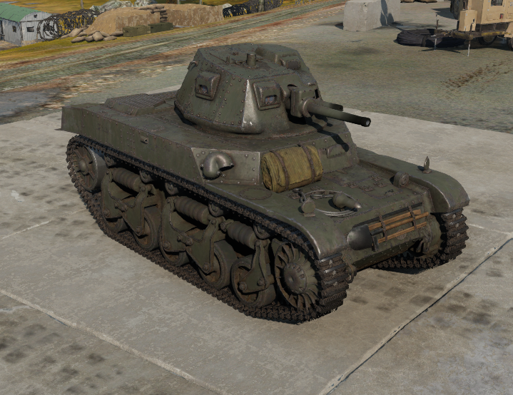
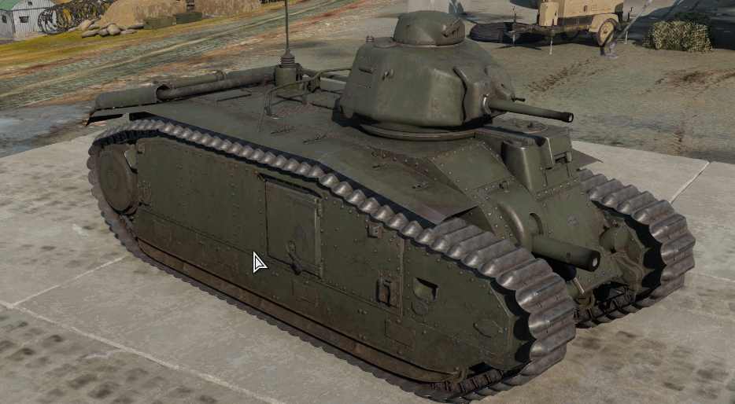

Spojenci
Aliance
Spojenci ve druhé světové válce byla koalice mocností válčících během druhé světové války proti mocnostem Osy. Jinak byly nazývány Spojené národy podle mezinárodní organizace založené po válce. Na začátku války, 1. září 1939, se spojenci skládali z Francie, Polska a Spojeného království a jejich současných, nebo dřívějších kolonií. Ke spojencům se po zahájení německé invaze do severní Evropy připojily Nizozemsko, Belgie, Řecko a Jugoslávie. Poté, co byl Sovětský svaz napaden Německem, mu byla nabídnuta vojenská pomoc od Spojeného království. Spojené státy po celou dobu poskytovaly Spojencům válečný materiál a peníze a oficiálně se připojily v prosinci 1941 po japonském útoku na Pearl Harbor. Čína již dříve byla ve válce s Japonskem od incidentu na mostě Marca Pola v roce 1937, ale oficiálně se připojila ke Spojencům až v roce 1941.
Francouzská obrana
Maginotova Linie
Maginotova linie je pevnostní systém vybudovaný Francií v letech 1929–1940. Linie, pojmenovaná podle André Maginota, který prosadil její financování. Opevnění na sever od Švýcarska jsou označována jako Severovýchodní Maginotova linie, opevnění na jih od Švýcarska jako Jižní nebo také Alpská Maginotova linie. Potenciálně nepřátelskými státy bylo pouze Německo a Itálie, kde byla opevnění nejsilnější, u hranic se zbývajícími státy však hrozil německý útok přes jejich území.
Výstavba opevnění byla motivována především zkušenostmi z první světové války, kdy pevnostní objekty, umístěné ve strategicky důležitých místech, prokázaly svůj velký význam. Oproti původním plánům však byly některé úseky vybudovány ve výrazně skromnější podobě, především pokud jde o jejich vybavení dělostřelectvem, což se negativně projevilo při bojích v roce 1940.
Maginotova linie byla vzorem pro některé další pevnostní systémy, především pro československé opevnění a Rupnikovu linii a v menší míře polské opevnění.
Bitva o Francii
Pád Francie
Bitva o Francii (10. května – 22. června 1940) byla mohutná vojenská operace druhé světové války. Bitva skončila vítězstvím Osy. Byla prokázána síla nových zbraní jako byly tanky, letadla a výsadkáři. Samotné tažení trvalo 32 dní. Hitler ovšem před Dunkerkem zastavil své tankové klíny a tak umožnil evakuaci Britského expedičního sboru a Svobodných Francouzů z přístavu Dunkerk. Ta umožnila Spojencům zachovat alespoň obranyschopnost Velké Británie.
Během Mainsteinova plánu německé obrněné jednotky překvapivě prošly přes Ardeny a poté údolím řeky Somme, odřízly a obklíčily spojenecké jednotky, které postupovaly do Belgie, kde očekávaly německou invazi. Britské, belgické a francouzské síly byly německými armádami zatlačeny zpět k moři. Německé síly 5. června zahájily operaci Fall Rot. Německé tanky obešly Maginotovu linii a postupovaly hluboko do francouzského území, přičemž 14. června okupovaly bez odporu Paříž. Po útěku francouzské vlády a pádu francouzské armády se němečtí velitelé 18. června setkali s francouzskými úředníky, aby vyjednali zastavení nepřátelských akcí.
Dne 22. června podepsalo Francie a Německo příměří v Compiègne. Neutrální Vichistická vláda vedená maršálem Philippem Pétainem nahradila Třetí republiku a Německo okupovalo severní Francii, atlantické pobřeží Francie a vnitrozemí. Italská invaze do Francie přes Alpy přinesla jen malé území zisky a po uzavření příměří Itálie obsadila malou okupační zónu na jihovýchodě Francie. Vichistická vláda si ponechala neobsazené území na jihu . V listopadu 1942 Němci a Italové tuto zónu obsadili v rámci operace Fall Anton. Osvobozena byla spojenci v roce 1944.
Vichistická Francie
V průběhu závěrečné fáze bitvy o Francii přesídlila vláda do lázeňského města Vichy ve střední Francii a 22. června 1940 podepsala kapitulaci. Den 11. července 1940, je dnem zániku Francouzské třetí republiky a vzniku Francouzského státu. Konec Vichistického režimu je datován na 25. srpna 1944, kdy byla osvobozena Paříž. Krátce ještě působila Vichistická vláda jako vláda v exilu v německém městě Sigmaringen.
Formálně vláda ve Vichy vládla celé Francii, severní Francie včetně Paříže však byla pod přímou okupační správou Wehrmachtu. Vláda ve Vichy směla dokonce udržovat vlastní vojsko i loďstvo, ač značně omezené. 10. listopadu 1942, v reakci na spojenecké vylodění v severní Africe, obsadily německé jednotky i tuto část území a Vichistická vláda se stala jen skutečnou německou loutkou. Vichistickému režimu však byla loajální také většina kolonií, které pak sloužily nacistům. Roku 1941 podepsal Vichistický premiér François Darlan s německým vyslancem v Paříži Otto Abetzem tzv. Pařížský protokol, který mimo jiné umožňoval Luftwaffe využívat letiště v Sýrii pro podporu povstání Rašída Alího v Iráku, přístavu Bizerta pro zásobování Afrikakorpsu a Dakaru jako základny Kriegsmarine.
Osvobození Francie
Do konce června dopravili Spojenci do Normandie kolem 850 000 vojáků a vyčistili poloostrov Cotentin s přístavem Cherbourg. Zároveň podnikali útoky na Caen, které bylo po tuhých bojích dobyto Brity a Kanaďany v průběhu července. Koncem téhož měsíce zahájili Američané operaci Cobra, jež vedla k prolomení německé linie na počátku srpna. Hitler se pokusil provést protiútok, jímž by odřízl divize generála Pattona pronikající do Bretaně a k Loiře. Jeho tanky však byly snadno odraženy. Kolem německých pancéřových sil na západě se navíc začala u Falaise nebezpečně stahovat smyčka hrozící jejich obklíčením. Westheer jen stěží vyvázl z této pohromy a v značně pošramoceném stavu se stáhl za Seinu.
Vítězní Spojenci poté za úzké součinnosti s francouzským hnutím odporu osvobodili 25. srpna Paříž. Už o deset dnů dříve uskutečnili Američané a svobodní Francouzi operaci Dragoon, když se vylodili v jižní Francii, odkud rychle postoupili údolím řeky Rhôny na sever. Do poloviny září se setkali u Dijonu se spojeneckými jednotkami razícími si cestu z Normandie.
Po překročení Seiny pronikli Spojenci do Belgie a k německým hranicím. Britové vstoupili v prvním zářijovém týdnu do Bruselu a osvobodili také Antverpy. Ústí Šeldy, bez něhož byl zdejší přístav bezcenný, setrvalo v rukou Němců až do listopadu. Řadu jiných přístavů na pobřeží Lamanšského průlivu a Atlantiku držely v souladu s Hitlerovými rozkazy německé posádky, které tím výrazně narušily již tak komplikované zásobování Spojenců. Mezi tyto přístavy patřil i Dunkerque, na jehož obléhání se výrazně podílela i Československá samostatná obrněná brigáda.
Po osvobození Paříže se nedostatkem vhodných přístavů neúnosně natahovaly spojenecké zásobovací linie z Normandie až téměř k německým hranicím a byly tak zranitelné. Američané proto vytvořili nonstop fungující zásobovací systém nákladích vozidel neustále pendlující mezi skladišti v Normandii a frontovou linií, kterému se říkalo Red Ball Express. Většina řidičů v Red Ball Expressu byli Afroameričané. Tento zásobovací systém fungoval tři měsíce od srpna do listopadu 1944, kdy byl otevřen přístav v Antverpách.
Letectvo
D.520
D.520 byl jednomotorový stíhač který letěl rychlostí až 529km/h
Historie
Bojový letoun Dewoitine D.520, který je všeobecně považován za nejlepší stíhací letoun francouzského původu, který vznikl během 2. světové války, měl dvě hlavní fáze. Po pádu Francie bylo velké množství tohoto typu odesláno do Afriky a některé se zúčastnily syrského tažení v roce 1941 proti britským a svobodným francouzským silám. Po boku německé Luftwaffe se piloti D.520 zapojili do bojů proti Spojencům během vylodění v rámci operace Torch v listopadu 1942. Po vítězství Spojenců se velký počet pilotů D.520 rozhodl změnit stranu a bojovat za Spojence. Typ byl hojně využíván stíhacími školami Luftwaffe jako cvičný, to ukazuje na zoufalství, kterému tato služba čelila na konci války. Nehodovost žáků byla velmi vysoká.
MB.162
MB.162 byl čtyřmotorový sedmiposádkový dálkový bombardér který letěl rychlostí až 507km/h
Historie
Letoun byl vyvinut z rychlého civilního dopravního letounu dlouhého doletu MB.160 pro 12 cestujících. Původní řadové motory Hispano Suiza 12Xirs byly v další fázi vývoje nahrazeny dvouhvězdicovými Gnome-Rhône 14N a jednoduché ocasní plochy dvojitými. Letoun MB.162 byl původně vyvíjen jako poštovní letadlo. Prototyp bombardéru MB.162 01 poprvé vzlétnul 1. června 1940, avšak následně byl ukořistěn německou armádou v Bordeaux na letišti Mérignac. Ve zkouškách prototypu se pak pokračovalo do roku 1942. Pokud by letoun MB.162 vstoupil do sériové výroby v roce 1941, jak bylo původně plánováno, stal by se dobrým a rychlým francouzským těžkým bombardérem, který by mohl být srovnáván s letounem B-17, ten však byl pomalejší, ale zato mnohem lépe vyzbrojený.
P.631
P.631 byl dvoumotorový dvouposádkový frontový bombardér který letěl rychlostí až 420km/h
Historie
Potez 633 byl jedním z mnoha derivátů modelu Potez 63. Byl to lehký bombardér a měl dvoučlennou posádku: pilota a zadního střelce. Francouzské letectvo zadalo společnosti SNCAN zakázku na výrobu 115 letounů. V roce 1938 však bylo rozhodnuto, že lehké bombardéry musí mít tříčlennou posádku, a kontrakt byl zrušen. Přesto byl Potez 633 s jistým úspěchem nabízen na export: Řecko koupilo dvacet čtyři letadel, Čína čtyři, Rumunsko objednalo čtyřicet a švýcarské letectvo koupilo jedno. Celkem dvacet letounů Potez 633 bylo dodáno Rumunsku před červnovým embargem v roce 1939. Tyto letouny posílilo devět dalších, které v roce 1941 předala vichistická Francie. Své bojové operace zahájily v den vyhlášení války Rumunskem SSSR, tedy v červnu 1941. Letouny Potez 633 podporovaly rumunské pozemní síly, zejména při obléhání Oděsy a v bitvě o Stalingrad. V prosinci 1942 se zbývající letouny vrátily do Rumunska a svou kariéru ukončily jako cvičné letouny pro piloty, kteří se cvičili na noční stíhače.
Těžká technika
Amc-35

Amc-35 byl tříposádkový lehký tank který jel rychlostí až 47km/h
Historie
Tank AMC-35 neoslnil. Jeho korba byla hranatá, tank měl malý dojezd. Stroj poháněl motor Renault o výkonu 180 hp. Podvozek se skládal na každé straně z hnacího kola vpředu, pěti pojezdových kol, napínacího kola vzadu a pěti napínacích kladek. V levé přední části tanku se nacházel prostor řidiče, přičemž výhled mu umožňovaly dva poklopy. Ve věži byl instalován kanón SA-35 ráže 47 mm . Při zahájení druhé světové války se ve Francii nacházelo jen 15 použitelných tanků AMC-35. Jejich výhodou byla dvojmístná věž vybavená účinným protitankovým kanónem. Tanky se poměrně úspěšně zapojily do obranných bojů proti německé armádě. Kořistní kusy Němci pojmenovali jako Panzerspaehwagen ZT 702 (f).
B1-bis

B1-bis byl tříposádkový těžký tank který jel rychlostí až 30km/h
Historie
Nástupce B1 bis měl těžší pancíř, větší motor a výkonnější dělo v nové věži. Na svou dobu byl důmyslný a výkonný, ale trpěl jednočlennou věží, špatnou komunikací a obtížemi při dosažení sériové výroby. Složitý systém řízení, který to umožňoval, se ukázal jako obzvláště náchylný k poruchám. V květnu 1940 bylo v bojových jednotkách nasazeno 243 tanků B1 bis z 368 vyrobených. Tvořily hlavní údernou sílu čtyř francouzských obrněných divizí, přičemž v každé divizi byly dva prapory a pět dalších samostatných tankových rot . V bitvě o Francii v roce 1940 dokázaly spolehlivě porazit pouze německé 88mm kanóny B1 bis. Německo ukořistilo 161 tanků B1 bis, které u 60 z nich nahradilo 75 mm plamenometem a sloužily ve Francii, v Holandsku na Balkáně a na Krymu. Svobodná francouzská 13. dragounská armáda použila v roce 1945 v boji letku 17 znovuzískaných houfnic B1 bis.
Arl-44
Arl-44 byl pětiposádkový těžký tank který jel rychlostí až 40km/h
Historie
ARL-44 (ACL-1) byla původní varianta ARL-44 z roku 1944 s kanónem SA 44 ráže 75 mm, šikmou čelní deskou ráže 60 mm a věží ACL1 navrženou loděnicí "Ateliers et Chantiers de la Loire". Tank byl izolován od nejnovějšího vývoje tankové konstrukce, byl považován za příliš slabý a vrácen zpět k rýsovacímu prknu, aby byl vybaven lepším pancéřováním a palebnou silou. Konstrukce se vyvíjela směrem ke známé verzi ARL-44: 90mm kanon, věž Schneider a 120mm šikmá čelní deska. Ačkoli bylo objednáno 60 věží ACL1, ARL-44 (ACL-1) nikdy nepřekročil stadium prototypu.